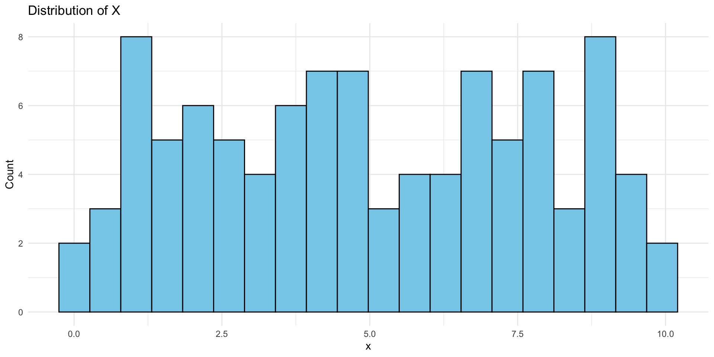
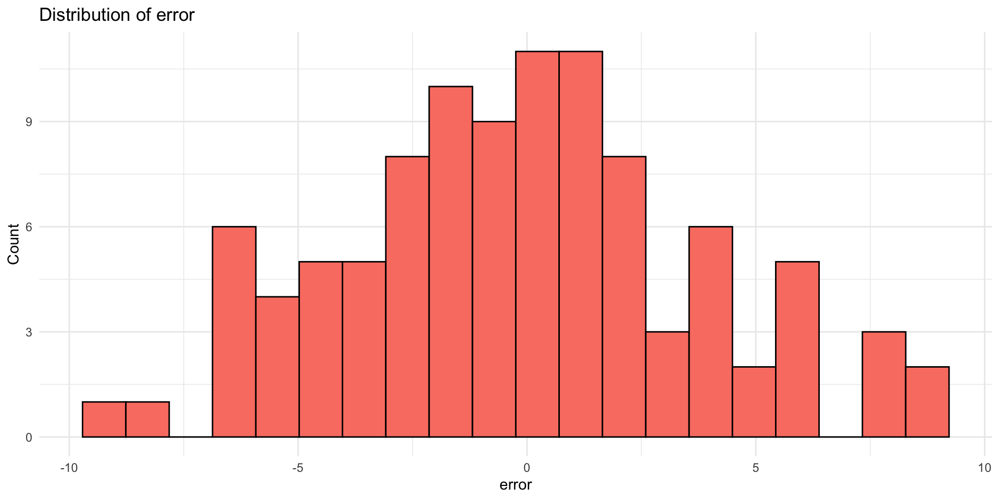
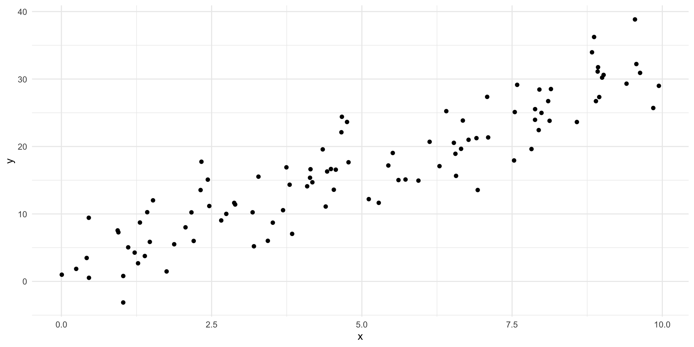
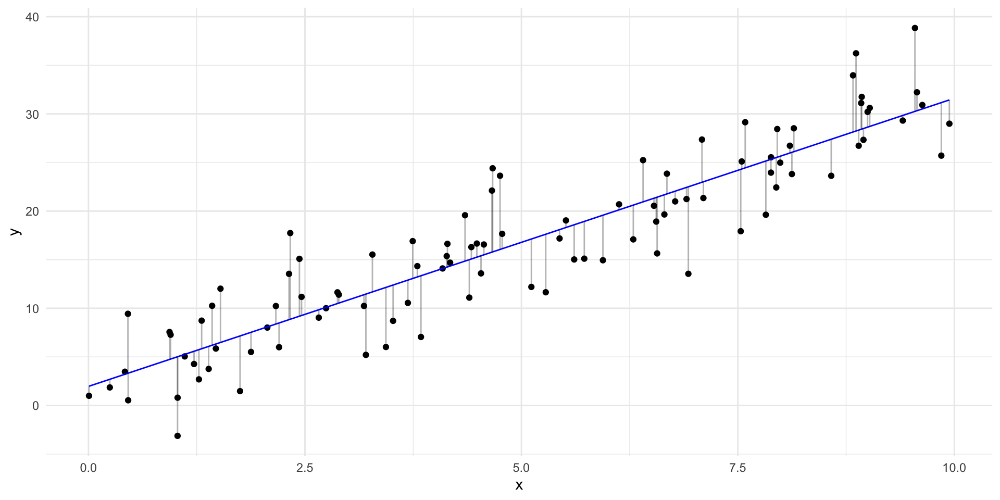
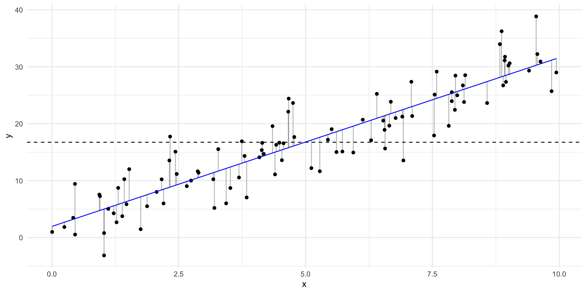
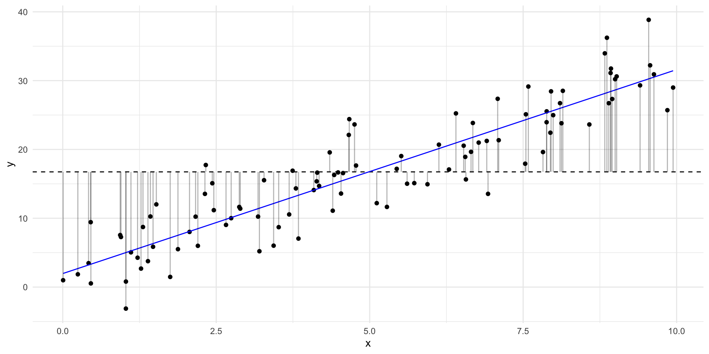
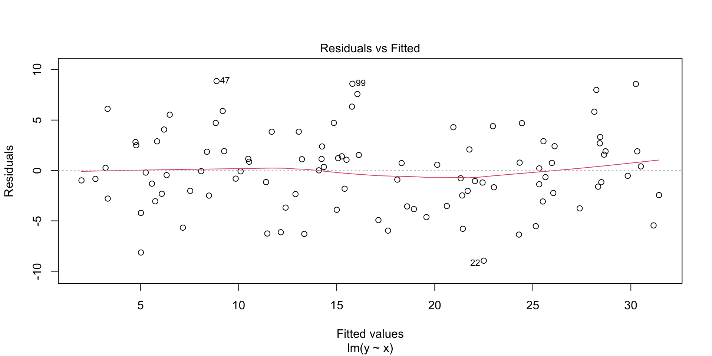
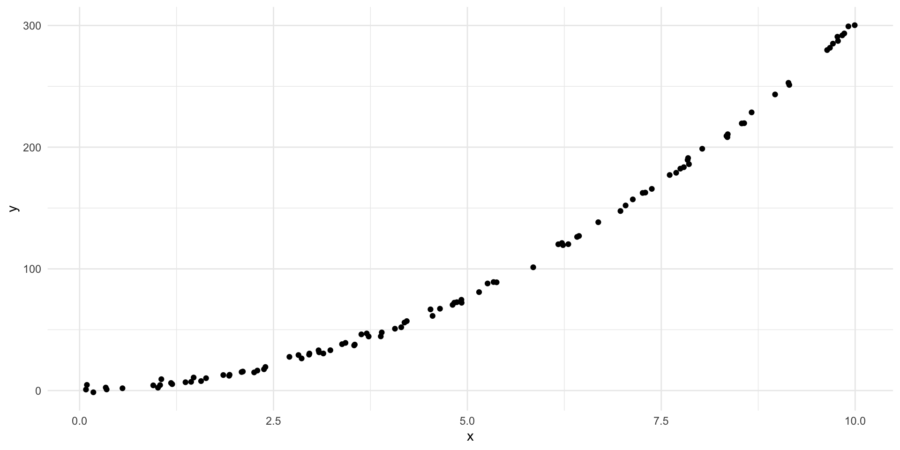
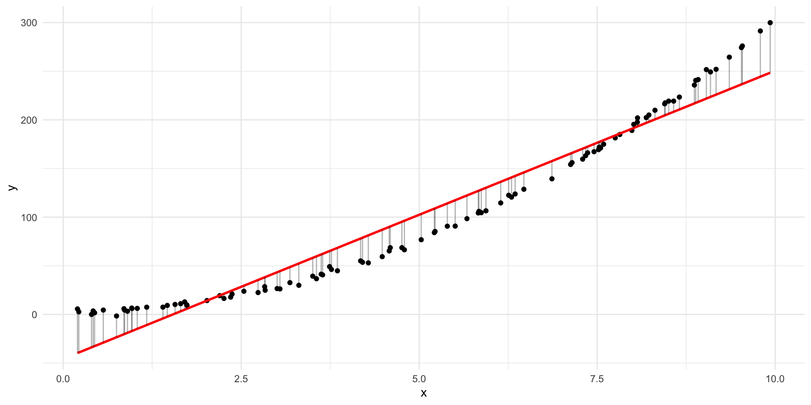
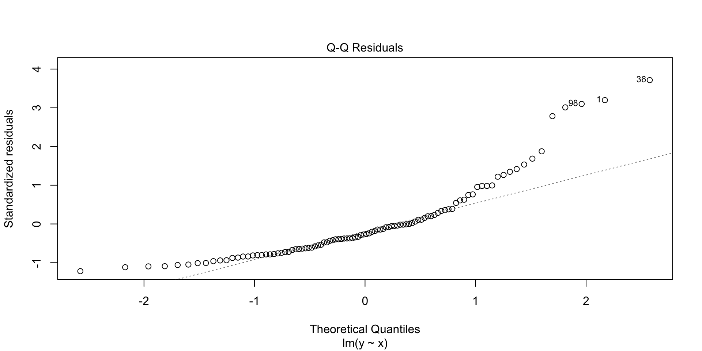

Week 1 Lab: Introduction to Regression with Simulated Data
Goals
By the end of the lab, you should be able to:
- Simulate simple linear data and understand the underlying model.
- Fit a linear model using lm() in R.
- Visualize the relationship and residuals.
- Understand the meaning of slope, intercept, and residuals.
- Play with OLS assumptions by manipulating the simulation.
Why Simulate Data?
🎯 You control the truth
You know the true model that generated the data — this makes it easier to understand what the model should do.🧪 Test assumptions
You can change one thing at a time — linearity, variance, sample size, error distribution — and see what happens.🔍 Learn to diagnose problems
By breaking assumptions on purpose, you get a feel for how violations show up in residual plots and model output.🧰 No data wrangling
Real-world data is messy. Simulation lets you focus on modeling without getting stuck cleaning first.🧠 Build intuition
Seeing how models behave under ideal and non-ideal conditions helps you understand what regression really does.
Simulate data
Let’s imagine an assumed model
- \(y = 2 + 3x + \varepsilon\)
- Systematic part: \(2 + 3x\)
- Unsystematic part: \(\varepsilon\)
Simulate data


Simulate data
x y
1 2.875775 11.640600
2 7.883051 25.534967
3 4.089769 14.097826
4 8.830174 33.964931
5 9.404673 29.310935
6 0.455565 9.432577
7 5.281055 11.648153
8 8.924190 31.111026
9 5.514350 19.038467
10 4.566147 16.562208As always - first inspect the data
As always - first inspect the data
mean_x sd_x mean_y sd_y
1 4.98559 2.849953 16.74179 9.28655
Fit a regression
We are ready to fit our regression line to the data using the function lm()
- The R-syntax is
dependent variable ~ independent variable(s)
Call:
lm(formula = y ~ x, data = data)
Residuals:
Min 1Q Median 3Q Max
-8.9519 -2.4529 -0.0789 2.3853 8.8689
Coefficients:
Estimate Std. Error t value Pr(>|t|)
(Intercept) 1.9642 0.7842 2.505 0.0139 *
x 2.9641 0.1367 21.678 <2e-16 ***
---
Signif. codes: 0 '***' 0.001 '**' 0.01 '*' 0.05 '.' 0.1 ' ' 1
Residual standard error: 3.877 on 98 degrees of freedom
Multiple R-squared: 0.8275, Adjusted R-squared: 0.8257
F-statistic: 470 on 1 and 98 DF, p-value: < 2.2e-16Fit a regression
As expected, our model can estimate parameters very close to what we used when simulating the data.
Call:
lm(formula = y ~ x, data = data)
Residuals:
Min 1Q Median 3Q Max
-8.9519 -2.4529 -0.0789 2.3853 8.8689
Coefficients:
Estimate Std. Error t value Pr(>|t|)
(Intercept) 1.9642 0.7842 2.505 0.0139 *
x 2.9641 0.1367 21.678 <2e-16 ***
---
Signif. codes: 0 '***' 0.001 '**' 0.01 '*' 0.05 '.' 0.1 ' ' 1
Residual standard error: 3.877 on 98 degrees of freedom
Multiple R-squared: 0.8275, Adjusted R-squared: 0.8257
F-statistic: 470 on 1 and 98 DF, p-value: < 2.2e-16Predict y using our model
x y pred resid
1 2.875775 11.640600 10.488152 1.15244738
2 7.883051 25.534967 25.330057 0.20491047
3 4.089769 14.097826 14.086512 0.01131338
4 8.830174 33.964931 28.137392 5.82753915
5 9.404673 29.310935 29.840245 -0.52931072
6 0.455565 9.432577 3.314486 6.11809143Predict y using our model
x y pred resid
1 2.875775 11.640600 10.488152 1.15244738
2 7.883051 25.534967 25.330057 0.20491047
3 4.089769 14.097826 14.086512 0.01131338
4 8.830174 33.964931 28.137392 5.82753915
5 9.404673 29.310935 29.840245 -0.52931072
6 0.455565 9.432577 3.314486 6.11809143
Remember the baseline model?

Remember the baseline model?

Let’s calculate the residuals in the baseline model
x y pred resid baseline_pred baseline_resid
1 2.875775 11.640600 10.488152 1.15244738 16.74179 -5.101186
2 7.883051 25.534967 25.330057 0.20491047 16.74179 8.793182
3 4.089769 14.097826 14.086512 0.01131338 16.74179 -2.643960
4 8.830174 33.964931 28.137392 5.82753915 16.74179 17.223146
5 9.404673 29.310935 29.840245 -0.52931072 16.74179 12.569149
6 0.455565 9.432577 3.314486 6.11809143 16.74179 -7.309208Calculating the Sum of Squares
RSS: 1473.18TSS: 8537.76Our model has an \(R^2\) of approximately 0.83 — meaning it explains about 83% of the total variation in \(y\).
OLS diagnostics
The distribution of residuals
Residuals should look roughly normal and structureless in plots.

The distribution of residuals
Residuals should look roughly normal and structureless in plots.

Example: Incorrect functional form

Example: Incorrect functional form

Check: Plot residuals vs fitted values
Example: Heteroscedasticity
Example: Non-Normality of Errors
